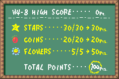
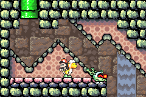
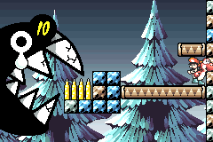
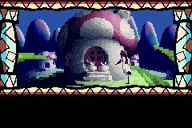
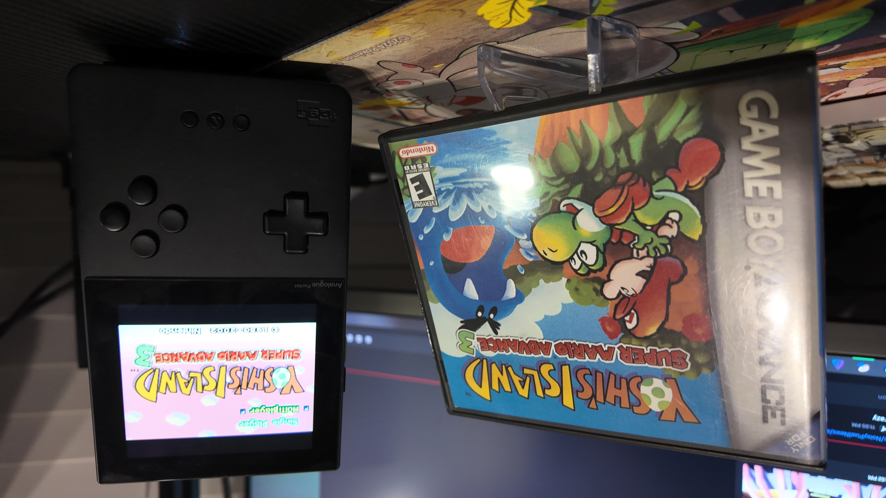

1game1week - Week 31 (7/30/25) - Yoshi's Island
Hey all! It's week 31! (7/30 -> 8/6)
Hope everyone's doing well. I'm taking time off from work for the next week, so I'm super excited to just kick back and not have to worry about random people calling me during off-hours.
Most of the time will just be used playing, which is desperately needed because as of today I have no "safety net", meaning a queue of games I've beaten to just make posts on. I HAVE to beat something this week, or I'll be late for a week which thankfully hasn't happened yet... well, aside from being late for posts anyway.
Recently taken up the habit of going to an 'antique' mall near me. It's nice, though it's not really something like antiques. I've just been going to buy stuff from what my limited vocabulary can only refer to as specialty shops... for physical media, I guess.
Whole thing was kind of a result of a few factors, but one amongst them being that I want to be able to disconnect from any service providers / streaming services and just own the things I like. I already do this for games, so why not movies and CDs, right?
Well... there aren't too many options nowadays. A lot of the stores that used to exist in my area were wiped out as a result of Covid. If not, the rise in streaming services for both music and films. If not, the convenience factor of purchasing the same stuff in an online marketplace like Amazon or eBay.
As someone who likes both physical media and prefers to buy local to support local businesses, it's tough out there. I know eBay is probably the 'better alternative', but shipping stuff makes me annoyed. It also feels like cheating... or maybe it's just more thrilling finding things locally?
Anyways, the antique mall... there's a couple shops where they sell movies and CDs, so it's been really fun spending a few hours browsing around aimlessly, seeing if I'll find something cool. Last weekend, I found a DVD collection of the Kanon anime, and a David Bowie CD. I'm not going to watch Kanon until I'm actually done with the VN, but the CD (Heathen) was great to listen to.
Going back to the previous point, let's pretend I bought Heathen on eBay or Amazon. I wait a couple days, it gets to my place, I listen to it... done.
But going to the shop, I was able to have a conversation with the seller, listen to some of his recommendations, talk about music... It's a different experience that you don't get otherwise. I think there is a very specific magic to human contact in third spaces (do shops count as third spaces?) that convenience made us forget.
I don't really know where I'm going with all this, just felt like yapping. If you spent your time reading, thanks! Or sorry! Whichever one fits! Support local businesses!
Anyways!
New games from 7/16 -> 7/22:
None! (Three week streak, total 9)
Currently, my backlog is at +13 (lower is better, +0 from last week).
And onto 1g1w. Once again, a game is considered "beaten" if I've accomplished the main objective of the game.
GAME: Super Mario World 2: Yoshi's Island
PLATFORM: Nintendo GameBoy Advance
GENRE: 2D Platformer
STARTED ON: 7/6
BEATEN ON: 7/23
TOTAL PLAYTIME: 13 hours and 55 minutes (tracked via Analogue Pocket timer)
Back in my Magical Quest post, I made a note thinking "maybe I just suck at platformers" and yeah I think I just suck at platformers.
I probably always have. Which is why this game has been in my backlog since Christmas 2002. I have a home video recording of a very young version of me getting this game for Christmas... and I just never beat it.
While I can't say for certain it was probably me being a dumb child who was unable to really get anywhere in the game. Another part was probably the baby crying being annoying. A third part was probably the game's checkpoint system being kinda crazy actually.
Outside of checkpoints / halfway points being annoying, this game was super fun. Having mini brain teasers every few stages was a really fun way of keeping things fresh, and having collectibles each stage along with the star / health / whatever system made it feel like every committment had to be properly thought out.

Part of the fun was that the world had an insane amount of charm, but I suppose that's by design. Enemies don't really feel like enemies, more so 'obstacles'. Sometimes they were really cute. Other times you went through their digestive system.


Overall, Yoshi's Island is a fun, carefully crafted platformer with engaging (albeit in my opinion too long) levels and a very charming aesthetic.
Even if I'm not the best at 2D platformers, I really had a fun time playing it and trying (and failing) to go for perfect scores whenever I could... I did get a few though!
The final note: the ending is obvious and it's a very old game so I don't feel bad. It's kind of crazy that the stork just leaves Mario and Luigi at the door and leaves as if it was an Amazon delivery. That's crazy. It probably would've been easier for Kamek to porch pirate them than go through the trouble of fighting Yoshi.


Thanks for reading! If you need to contact me for any reason, please feel free to email me at aru@hoshikawa-aru.com.